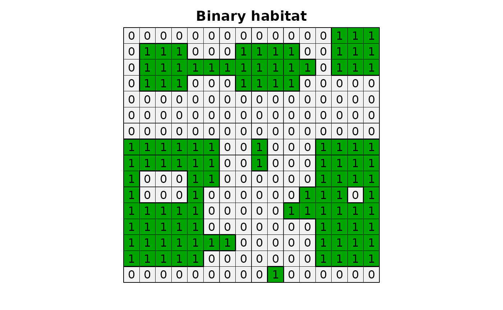
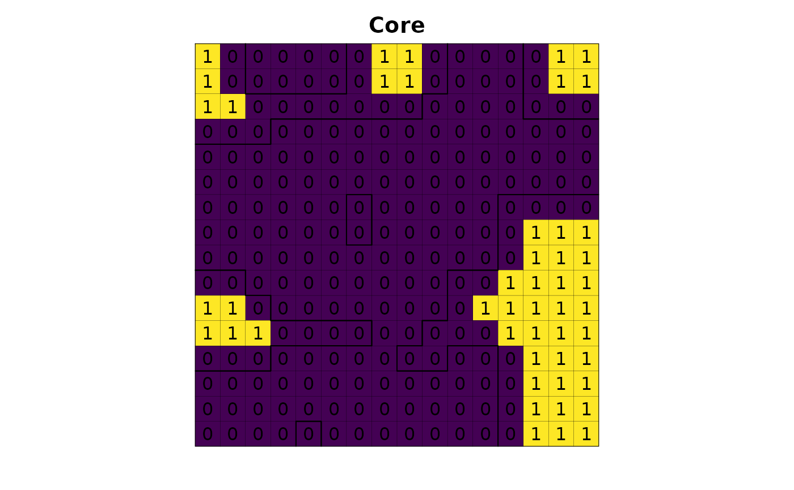
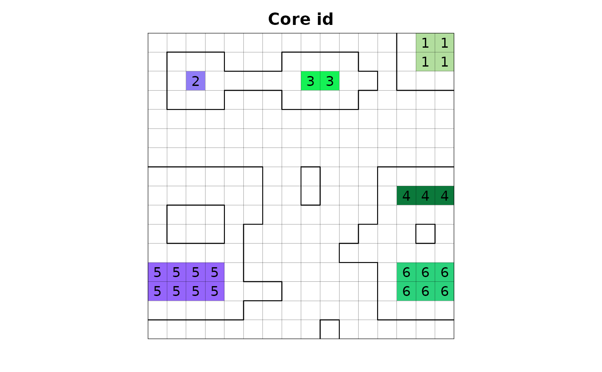
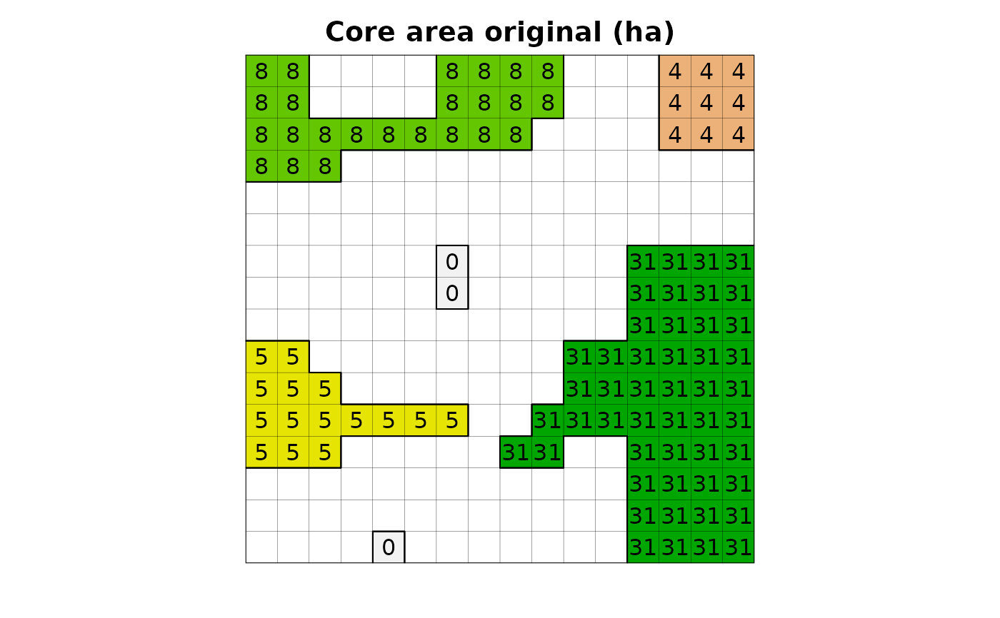
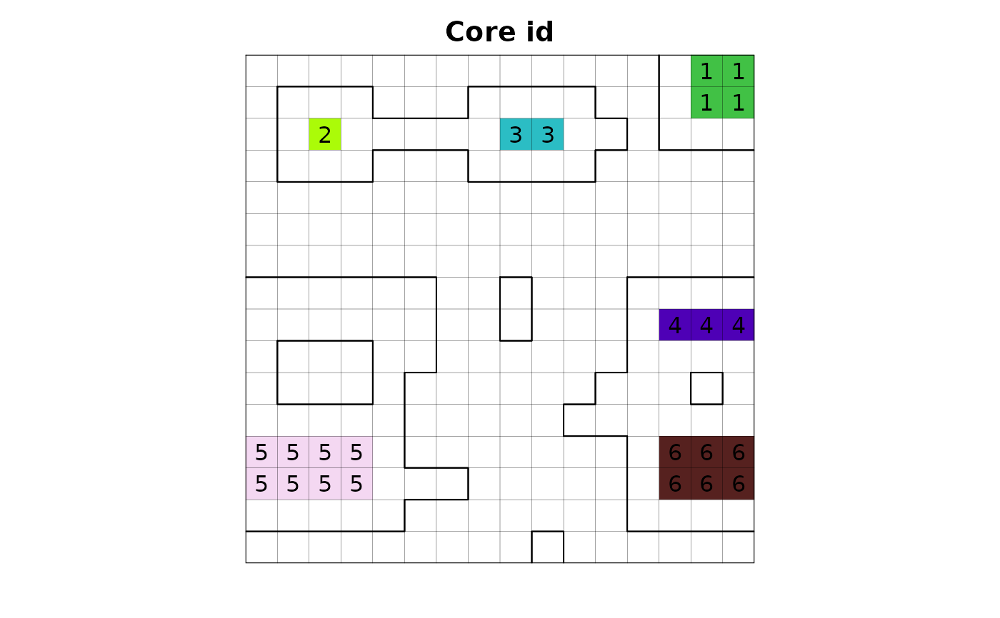
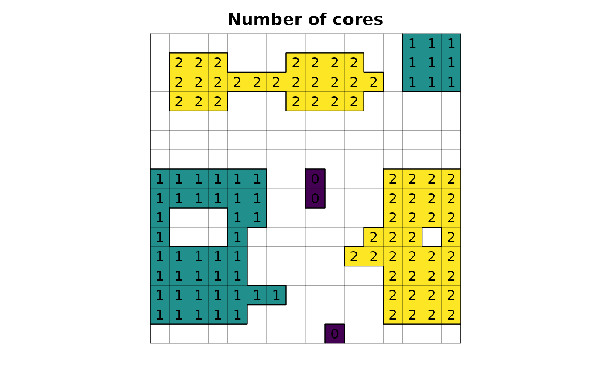

Identify the core and edge of landscape elements for each pixel. Calculate area, original area and percentage of core and edge.
Usage
lsm_core_edge(
input,
output = NULL,
zero_as_na = FALSE,
edge_depth,
type = "all",
id = FALSE,
ncell = FALSE,
area_integer = FALSE,
calculate_area = FALSE,
core_edge_original = FALSE,
calculate_percentage = FALSE,
core_number = FALSE,
buffer_radius = NULL,
buffer_circular = FALSE
)Arguments
- input
[character=""]
Habitat map, following a binary classification (e.g. values 1,0 or 1,NA for habitat,non-habitat).- output
[character=""]
Map name output inside GRASS Data Base.- zero_as_na
[logical(1)=FALSE]
IfTRUE, the function treats non-habitat cells as null; ifFALSE, the function converts non-habitat zero cells to null cells.- edge_depth
[numeric]
Integer indicating edge distance in meters considered adjacent to form a patch.- type
[character=""]- ncell
[logical(1)=FALSE]
IfTRUE- area_integer
[logical(1)=FALSE]
IfTRUE- calculate_area
[logical(1)=FALSE]- calculate_percentage
[logical(1)=FALSE]- core_number
[logical(1)=FALSE]- buffer_radius
[numeric]- buffer_circular
[logical(1)=FALSE]
Examples
library(lsmetrics)
library(terra)
# read habitat data
f <- system.file("raster/toy_landscape_habitat.tif", package = "lsmetrics")
r <- terra::rast(f)
# plot
plot(r, legend = FALSE, axes = FALSE, main = "Binary habitat")
plot(as.polygons(r, dissolve = FALSE), lwd = .1, add = TRUE)
plot(as.polygons(r), add = TRUE)
text(r)
# find grass
path_grass <- as.character(link2GI::findGRASS()[1]) # windows users need to find, e.g. "C:/Program Files/GRASS GIS 8.2"
# create grassdb
rgrass::initGRASS(gisBase = path_grass,
SG = r,
gisDbase = "grassdb",
location = "newLocation",
mapset = "PERMANENT",
override = TRUE)
#> gisdbase grassdb
#> location newLocation
#> mapset PERMANENT
#> rows 16
#> columns 16
#> north 7525600
#> south 7524000
#> west 234000
#> east 235600
#> nsres 100
#> ewres 100
#> projection:
#> PROJCRS["WGS 84 / UTM zone 23S",
#> BASEGEOGCRS["WGS 84",
#> ENSEMBLE["World Geodetic System 1984 ensemble",
#> MEMBER["World Geodetic System 1984 (Transit)"],
#> MEMBER["World Geodetic System 1984 (G730)"],
#> MEMBER["World Geodetic System 1984 (G873)"],
#> MEMBER["World Geodetic System 1984 (G1150)"],
#> MEMBER["World Geodetic System 1984 (G1674)"],
#> MEMBER["World Geodetic System 1984 (G1762)"],
#> MEMBER["World Geodetic System 1984 (G2139)"],
#> ELLIPSOID["WGS 84",6378137,298.257223563,
#> LENGTHUNIT["metre",1]],
#> ENSEMBLEACCURACY[2.0]],
#> PRIMEM["Greenwich",0,
#> ANGLEUNIT["degree",0.0174532925199433]],
#> ID["EPSG",4326]],
#> CONVERSION["UTM zone 23S",
#> METHOD["Transverse Mercator",
#> ID["EPSG",9807]],
#> PARAMETER["Latitude of natural origin",0,
#> ANGLEUNIT["degree",0.0174532925199433],
#> ID["EPSG",8801]],
#> PARAMETER["Longitude of natural origin",-45,
#> ANGLEUNIT["degree",0.0174532925199433],
#> ID["EPSG",8802]],
#> PARAMETER["Scale factor at natural origin",0.9996,
#> SCALEUNIT["unity",1],
#> ID["EPSG",8805]],
#> PARAMETER["False easting",500000,
#> LENGTHUNIT["metre",1],
#> ID["EPSG",8806]],
#> PARAMETER["False northing",10000000,
#> LENGTHUNIT["metre",1],
#> ID["EPSG",8807]]],
#> CS[Cartesian,2],
#> AXIS["(E)",east,
#> ORDER[1],
#> LENGTHUNIT["metre",1]],
#> AXIS["(N)",north,
#> ORDER[2],
#> LENGTHUNIT["metre",1]],
#> USAGE[
#> SCOPE["Engineering survey, topographic mapping."],
#> AREA["Between 48°W and 42°W, southern hemisphere between 80°S and equator, onshore and offshore. Brazil."],
#> BBOX[-80,-48,0,-42]],
#> ID["EPSG",32723]]
# import raster from r to grass
rgrass::write_RAST(x = r, flags = c("o", "overwrite", "quiet"), vname = "r")
#> SpatRaster read into GRASS using r.in.gdal from file
# core and edge
lsmetrics::lsm_core_edge(input = "r",
edge_depth = 100,
type = "edge",
id = TRUE,
core_number = TRUE,
core_edge_original = TRUE,
calculate_area = TRUE,
calculate_percentage = TRUE,
buffer_radius = 100,
buffer_circular = FALSE)
#> Converting null and zero
#> Opening selection map <r_core_edge_binary>
#> 0% 6% 12% 18% 25% 31% 37% 43% 50% 56% 62% 68% 75% 81% 87% 93% 100%
#> Calculating edge
#> Calculating edge area
#> Converting zero as null
#> Identifying the fragmentes
#> Counting the cell number of fragmentes
#> First pass
#> 0% 6% 12% 18% 25% 31% 37% 43% 50% 56% 62% 68% 75% 81% 87% 93% 100%
#> Writing output map
#> 0% 6% 12% 18% 25% 31% 37% 43% 50% 56% 62% 68% 75% 81% 87% 93% 100%
#> Calculating the area of fragmentes
#> First pass
#> 0% 6% 12% 18% 25% 31% 37% 43% 50% 56% 62% 68% 75% 81% 87% 93% 100%
#> Writing output map
#> 0% 6% 12% 18% 25% 31% 37% 43% 50% 56% 62% 68% 75% 81% 87% 93% 100%
#> Calculating edge percentage
#> Calculating proportion
#> Calculating proportion
#> Opening selection map <r_edge100_percentage_binary>
#> 0% 6% 12% 18% 25% 31% 37% 43% 50% 56% 62% 68% 75% 81% 87% 93% 100%
#> Calculating percentage
#> Changing the raster color
#> Cleaning rasters
#> Warning: The command:
#> g.remove -b -f --quiet type=raster name=r_edge100_binary
#> produced at least one warning during execution:
#> WARNING: No data base element files found
#> WARNING: No data base element files found
#> Cleaning rasters
# files
# rgrass::execGRASS(cmd = "g.list", type = "raster")
# import from grass to r
r_core100 <- rgrass::read_RAST("r_core100", flags = "quiet", return_format = "terra")
#> Error in execGRASS("r.info", flags = "r", map = vname[i], intern = TRUE, ignore.stderr = ignore.stderr): The command:
#> r.info -r map=r_core100
#> produced an error (1) during execution:
#> ERROR: Raster map <r_core100> not found
r_core100_area_ha <- rgrass::read_RAST("r_core100_area_ha", flags = "quiet", return_format = "terra")
#> Error in execGRASS("r.info", flags = "r", map = vname[i], intern = TRUE, ignore.stderr = ignore.stderr): The command:
#> r.info -r map=r_core100_area_ha
#> produced an error (1) during execution:
#> ERROR: Raster map <r_core100_area_ha> not found
r_core100_area_ha_original <- rgrass::read_RAST("r_core100_area_ha_original", flags = "quiet", return_format = "terra")
#> Error in execGRASS("r.info", flags = "r", map = vname[i], intern = TRUE, ignore.stderr = ignore.stderr): The command:
#> r.info -r map=r_core100_area_ha_original
#> produced an error (1) during execution:
#> ERROR: Raster map <r_core100_area_ha_original> not found
r_core100_id <- rgrass::read_RAST("r_core100_id", flags = "quiet", return_format = "terra")
#> Error in execGRASS("r.info", flags = "r", map = vname[i], intern = TRUE, ignore.stderr = ignore.stderr): The command:
#> r.info -r map=r_core100_id
#> produced an error (1) during execution:
#> ERROR: Raster map <r_core100_id> not found
r_core100_core_number <- rgrass::read_RAST("r_core100_core_number_original", flags = "quiet", return_format = "terra")
#> Error in execGRASS("r.info", flags = "r", map = vname[i], intern = TRUE, ignore.stderr = ignore.stderr): The command:
#> r.info -r map=r_core100_core_number_original
#> produced an error (1) during execution:
#> ERROR: Raster map <r_core100_core_number_original> not found
r_core100_pct_buf100 <- rgrass::read_RAST("r_core100_pct_buf100", flags = "quiet", return_format = "terra")
#> Error in execGRASS("r.info", flags = "r", map = vname[i], intern = TRUE, ignore.stderr = ignore.stderr): The command:
#> r.info -r map=r_core100_pct_buf100
#> produced an error (1) during execution:
#> ERROR: Raster map <r_core100_pct_buf100> not found
r_edge100 <- rgrass::read_RAST("r_edge100", flags = "quiet", return_format = "terra")
r_edge100_area_ha <- rgrass::read_RAST("r_edge100_area_ha", flags = "quiet", return_format = "terra")
r_edge100_id <- rgrass::read_RAST("r_edge100_id", flags = "quiet", return_format = "terra")
r_edge100_area_ha_original <- rgrass::read_RAST("r_edge100_area_ha_original", flags = "quiet", return_format = "terra")
r_edge100_pct_buf100 <- rgrass::read_RAST("r_edge100_pct_buf100", flags = "quiet", return_format = "terra")
# plot
plot(r_core100, legend = FALSE, axes = FALSE, main = "Core")
#> Error in h(simpleError(msg, call)): error in evaluating the argument 'x' in selecting a method for function 'plot': object 'r_core100' not found
plot(as.polygons(r, dissolve = FALSE), lwd = .1, add = TRUE)
plot(as.polygons(r), add = TRUE)
text(r_core100)
#> Error in h(simpleError(msg, call)): error in evaluating the argument 'x' in selecting a method for function 'text': object 'r_core100' not found
plot(r_core100_area_ha, legend = FALSE, axes = FALSE, main = "Core area (ha)")
#> Error in h(simpleError(msg, call)): error in evaluating the argument 'x' in selecting a method for function 'plot': object 'r_core100_area_ha' not found
plot(as.polygons(r, dissolve = FALSE), lwd = .1, add = TRUE)
plot(as.polygons(r), add = TRUE)
text(r_core100_area_ha)
#> Error in h(simpleError(msg, call)): error in evaluating the argument 'x' in selecting a method for function 'text': object 'r_core100_area_ha' not found
plot(r_core100_area_ha_original, legend = FALSE, axes = FALSE, main = "Core area original (ha)")
#> Error in h(simpleError(msg, call)): error in evaluating the argument 'x' in selecting a method for function 'plot': object 'r_core100_area_ha_original' not found
plot(as.polygons(r, dissolve = FALSE), lwd = .1, add = TRUE)
plot(as.polygons(r), add = TRUE)
text(r_core100_area_ha_original)
#> Error in h(simpleError(msg, call)): error in evaluating the argument 'x' in selecting a method for function 'text': object 'r_core100_area_ha_original' not found
plot(r_core100_id, legend = FALSE, axes = FALSE, main = "Core id")
#> Error in h(simpleError(msg, call)): error in evaluating the argument 'x' in selecting a method for function 'plot': object 'r_core100_id' not found
plot(as.polygons(r, dissolve = FALSE), lwd = .1, add = TRUE)
plot(as.polygons(r), add = TRUE)
text(r_core100_id)
#> Error in h(simpleError(msg, call)): error in evaluating the argument 'x' in selecting a method for function 'text': object 'r_core100_id' not found
plot(r_core100_core_number, legend = FALSE, axes = FALSE, main = "Number of cores")
#> Error in h(simpleError(msg, call)): error in evaluating the argument 'x' in selecting a method for function 'plot': object 'r_core100_core_number' not found
plot(as.polygons(r, dissolve = FALSE), lwd = .1, add = TRUE)
plot(as.polygons(r), add = TRUE)
text(r_core100_core_number)
#> Error in h(simpleError(msg, call)): error in evaluating the argument 'x' in selecting a method for function 'text': object 'r_core100_core_number' not found
plot(r_core100_pct_buf100, legend = FALSE, axes = FALSE, main = "Core percentage (buffer 100 m)")
#> Error in h(simpleError(msg, call)): error in evaluating the argument 'x' in selecting a method for function 'plot': object 'r_core100_pct_buf100' not found
plot(as.polygons(r, dissolve = FALSE), lwd = .1, add = TRUE)
plot(as.polygons(r), add = TRUE)

text(r_core100_pct_buf100, cex = .75)
#> Error in h(simpleError(msg, call)): error in evaluating the argument 'x' in selecting a method for function 'text': object 'r_core100_pct_buf100' not found
plot(r_edge100, legend = FALSE, axes = FALSE, main = "Edge")
plot(as.polygons(r, dissolve = FALSE), lwd = .1, add = TRUE)
plot(as.polygons(r), add = TRUE)
text(r_edge100)

plot(r_edge100_area_ha, legend = FALSE, axes = FALSE, main = "Edge area (ha)")
plot(as.polygons(r, dissolve = FALSE), lwd = .1, add = TRUE)
plot(as.polygons(r), add = TRUE)
text(r_edge100_area_ha)

plot(r_edge100_area_ha_original, legend = FALSE, axes = FALSE, main = "Edge area original (ha)")
plot(as.polygons(r, dissolve = FALSE), lwd = .1, add = TRUE)
plot(as.polygons(r), add = TRUE)
text(r_edge100_area_ha_original)

plot(r_edge100_id, legend = FALSE, axes = FALSE, main = "Edge id")
plot(as.polygons(r, dissolve = FALSE), lwd = .1, add = TRUE)
plot(as.polygons(r), add = TRUE)
text(r_edge100_id)

plot(r_edge100_pct_buf100, legend = FALSE, axes = FALSE, main = "Edge percentage (buffer 100 m)")
plot(as.polygons(r, dissolve = FALSE), lwd = .1, add = TRUE)
plot(as.polygons(r), add = TRUE)
text(r_edge100_pct_buf100, cex = .75)

# delete grassdb
unlink("grassdb", recursive = TRUE)